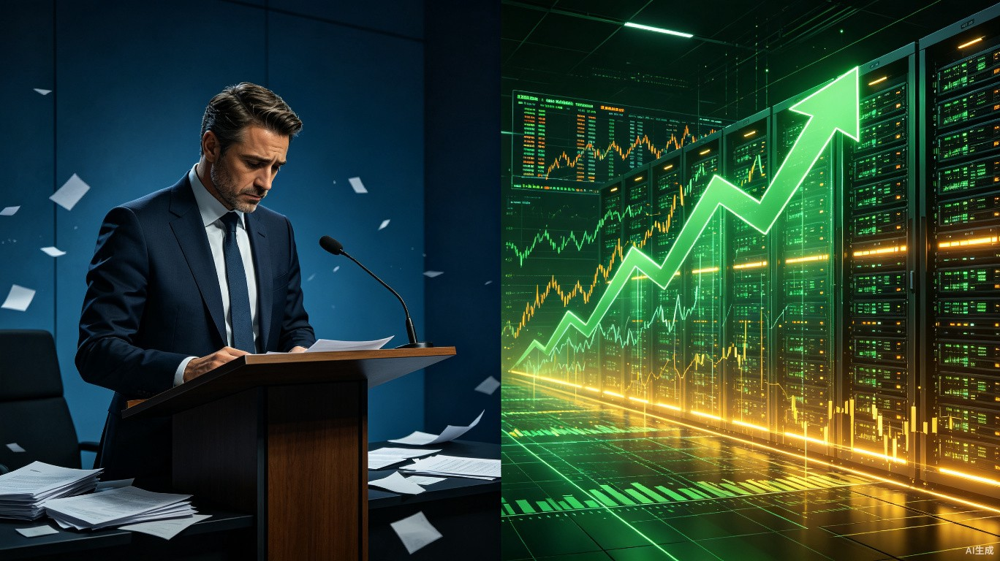

7月2日，Meta总部的一场内部全员大会正在进行。这场会议本该是封闭的内部沟通，但录音很快被路透社拿到了。会议室里坐满了人，线上还有数千名员工在观看直播。没有人预料到，这场会议会在几天后掀起华尔街的一场地震。
扎克伯格站在台上，语气罕见地低沉。他说，过去四个月里，智能体开发的推进速度完全没有达到预期。新的组织架构上下的赌注至今还没见到果实。5月那场大裁员和团队重组，执行得不够干净利落。高管们误判了调整的时机和节奏。
这些词从一个向来以强硬和自信著称的CEO嘴里说出来，现场的气氛凝固了。
我当时就愣住了。一个市值万亿美元的公司掌舵人，在全体员工面前说"搞砸了"，这本身就不是常规剧本。更反常的是，这些话被媒体报道后，Meta股价不是跌，而是暴涨。市场等的不是好消息，而是一个拐点信号。
路透社拿到的录音很完整。扎克伯格的原话是，"至少过去四个月里，智能体开发的推进速度，完全没有达到我们的预期。"他还说，"新的组织架构上下的赌注至今还没见到果实。"
这些话的分量很重。Meta今年对AI的投入堪称疯狂。2026年AI资本开支预计达到1450亿美元，比去年的722亿提升了近87%。近千亿美元的增量砸下去，换来的却是CEO在全员面前承认进度不达标。
但他也给了时间表。方向不变，3到6个月内能看到回报。他还提到一个细节，年初公司对AI编程工具热情极高，比如Claude Code这类产品，但判断有误。高管们以为这些工具能立刻改变工程效率，现实并没有那么理想。
坦诚是罕见的品质，尤其是在这个级别。扎克伯格没有找借口，没有甩锅给团队，而是直接把问题摆到台面上。
不过，比扎克伯格的表态更劲爆的，是Wired在同一时间发出的另一篇报道。
Wired的报道揭示了一个更混乱的现场。那场全员大会不是一场平静的通气会，而是一场情绪炸药桶。
有员工在直播会议的聊天区直接爆粗口攻击管理层。原话是，"being the company's bitch"，还让同事写邮件给Meta AI高管，说他是"a piece of shit"。Wired的描述中，一位演讲者听到后用手捂住了脸。
Applied AI团队约6500人，对重组方式普遍不满。有员工形容新部门是"literally the gulag"，简直就是古拉格。有人说自己突然"zero purpose in life"，生活中失去了目的。他们的工作内容，是生成谜题来测试AI模型。Wired的报道称，"Most people find the work soul-crushing"，大多数人觉得这份工作是精神折磨。
搞得太离谱了。一家全球顶尖科技公司，把数千名工程师从原有岗位抽调出来，让他们去做AI模型的测试谜题。这不是资源整合，这是人力资本的系统性浪费。
超过1600名员工签署了请愿书，要求Meta停止监控员工鼠标点击和键盘输入来生成AI训练数据。这个细节很少被讨论，但它暴露了一个更深层的问题。Meta不只是囤了太多算力，它在数据获取的方式上也正在触碰员工忍耐的底线。
首席产品官Chris Cox也在会上发言。他说过去几个月的环境是"difficult"和"brutal"，形容公司是"insanity of this company"，"running a marathon in the middle of a hailstorm"。他还说了一句被很多人引用的话，AI "is neither god, nor is it the devil"，"it's nowhere near as good as you think it is, and it is nowhere near as bad as you think it is"。这段话值得细品。Cox想表达的是一种去泡沫化的冷静，核心目的就是在给全公司降温。
这是最核心的问题。按理说，CEO承认重大战略推进不及预期，股价应该跌。但Meta涨了9%，市值一度突破1.5万亿美元。同一条新闻，对Meta是利好，对半导体产业链却是灾难。差别在于，两边听懂了不同的信息。
资本市场从扎克伯格的话里捕捉到了一个关键信号，Meta准备停止无节制的AI资本开支扩张，开始算细账了。这不是AI寒冬，这是AI投资从"信仰驱动"切换到"ROI驱动"。
坦率地讲，过去两年支撑半导体牛市的核心叙事只有一句话，算力永久紧缺，巨头资本开支永续扩张。这个叙事撑起了英伟达的万亿市值，撑起了CoreWeave和Nebius的疯狂估值，也撑起了整个费城半导体指数相对200日均线65%的偏离幅度。迈克尔·伯里已经预警过，这个偏离程度是2000年互联网泡沫以来最高水平。
扎克伯格的讲话，戳破了这个叙事的第一个裂缝。如果Meta，这个全球四大云厂商之一、今年AI支出最激进的公司，都开始承认囤的算力太多、组织架构太乱、利用率太低，那"算力永久稀缺"的逻辑还站得住脚吗？
市场给出的答案很明确。站不住了。
很多朋友可能不知道，Meta在全员大会前后还做了一件事，推出Meta Compute，向外部出租闲置算力。
这个动作很容易被误解为Meta要进军云计算，跟亚马逊AWS、微软Azure抢生意。不是的。Meta Compute不是新增云赛道的扩张，而是被动盘活存量。公司内部消化不掉的算力，向外部AI初创公司和中小企业开放租赁。
Meta还打包了Llama系列大模型做MaaS服务。外部客户租的不只是裸算力，还有Meta自家的模型能力。
更关键的是成本结构。Meta的芯片是批量采购的，成本远低于CoreWeave、Nebius这类第三方云服务商。如果Meta真的把闲置算力大规模推向市场，外部租赁价格会有明显的成本优势，对现有的AI云租赁格局造成直接冲击。
CoreWeave当天暴跌13.92%，Nebius大跌17.01%。这两家公司几乎是纯AI算力租赁商，商业模式建立在"算力稀缺"的假设上。Meta一开口说"我们算力太多要往外租"，它们的估值逻辑就动摇了。
Meta Compute的推出，配合扎克伯格的坦诚表态，构成了一个完整的叙事转折。从"我们需要更多卡"到"我们的卡太多了"。这个转折对Meta自身是利好，因为资本开支增速可能见顶。但对半导体产业链，是一个明确的拐点信号。
说真的，1450亿美元的AI资本开支，算力集群平均利用率却只有三成。这个数字才是整个事件最刺眼的部分。
大量H100、H200服务器长期闲置。这是已经花出去的钱，是沉没成本。三成利用率意味着，Meta今年投下去的近1500亿美元里，有超过1000亿美元的资产在大部分时间里处于低效运转状态。这些芯片的折旧不会等人，每一秒都在消耗公司的现金流。
这不是Meta一家的问题。全球四大云厂商今年的AI总支出超过7000亿美元。如果行业平均利用率都偏低，那整个AI基础设施的投资回报率就要被重估。
华尔街最怕的不是亏损，而是不知道亏到哪一站才停。扎克伯格的表态，给了市场一个确定性，Meta知道问题在哪，而且正在修正。确定性比好消息本身更重要。
从财务数据看，Meta的基本面并不差。Q1营收563.1亿美元，增速33%，是2021年以来最快的季度增长。每股收益7.31美元，远超预期的6.79美元。唯一让人担心的是DAU 35.6亿，同比增长4%，低于预期的36.2亿。用户增长见顶的迹象已经显现。
但年内股价此前已经跌了11.7%，标普同期涨了9%。Meta跑输大盘20个百分点，市场已经在用脚投票表达对AI疯狂烧钱的担忧。所以当扎克伯格说出"搞砸了"的时候，投资者听到的不是失败，而是止损的可能。
同一天，费城半导体指数暴跌超5.4%，美光、闪迪等存储龙头跌超10%。这不是正常的板块轮动，这是核心叙事的瓦解。
过去两年，半导体行业的投资逻辑建立在一个简单到不能再简单的故事上。AI需要算力，算力需要芯片，芯片永远不够，所以买半导体股票永远对。这个故事太好讲了，也太容易让人信以为真了。
但故事总有尽头。当全球最大买家之一站出来说，我买太多了，用不完，还要往外租的时候，供应端的预期就要被重写。
存储芯片受到的冲击尤其大。AI训练需要大量高带宽内存，HBM的供需紧张是过去两年存储行业最大的利好。但如果训练集群的利用率只有三成，新增需求的真实速度可能远低于产业链的预期。美光和闪迪的暴跌，反映的就是这个担忧。
更深层的问题在于，整个AI产业链的库存周期可能被扭曲了。过去两年的疯狂采购，有多少是真实需求，有多少是恐慌性囤货？芯片厂扩产周期长达18到24个月，现在投产的新产能依据的是两年前的需求预测。如果下游利用率持续低迷，库存修正可能超出预期。
一定会有人说，AI寒冬来了。这种说法过于简单，也过于悲观。
寒冬的特征是什么？是需求消失，是技术路线被证伪，是行业全面收缩。现在的情况完全不是这样。Meta没有削减AI投入，它只是承认投入的效率太低，需要优化。1450亿美元的预算没有砍掉，但花的方式要变。
从"无限囤卡"到"精细算账"，这不是撤退，是换挡。第一档是蛮力驱动，谁的卡多谁赢。第二档是效率驱动，谁的利用率高谁赢。这个换挡对所有玩家都是考验，但对真正有应用场景、有数据闭环的公司是利好。
Meta有应用。Facebook、Instagram、WhatsApp，35.6亿日活用户，这是其他纯AI公司无法比拟的优势。AI对它不是成本中心，而是产品体验的提升手段。Reels的推荐算法、广告系统的精准投放、WhatsApp的商用工具，这些才是AI真正产生现金流的地方。
但对那些没有应用、只靠卖算力活着的公司，这个换挡就是生死关。CoreWeave和Nebius的暴跌，不是市场对它们的惩罚，是市场在重新定价一个没有"算力永久稀缺"护航的世界。
这个问题比看起来更难回答。
微软、谷歌、亚马逊，三家今年的AI资本开支都在创纪录增长。它们会不会也站出来说"我们的利用率其实不高"？短期内大概率不会。这种表态需要勇气，也需要公司有足够的业务底气来承受叙事转折的震荡。
但实际行动可能会悄悄变化。谷歌一直在推TPU的利用率优化，亚马逊的Trainium芯片策略也是成本导向的。这些动作本身就是在为"后稀缺时代"做准备。
更有可能的情况是，不会有第二个CEO像扎克伯格这样公开坦诚。但各家的资本开支增速会在未来几个季度逐步放缓，从87%的同比增长回落到更可持续的水平。
对于半导体产业链来说，这说明需求不会断崖式下跌，但预期的斜率要下调。过去两年那种"永远买不够"的疯狂采购周期，大概率已经见顶了。供应链的传导会有滞后，芯片厂的订单已经排到了几个季度之后，但订单增速的拐点可能就在眼前。
如果你是投资者，这件事的核心启示是，叙事比数字更重要，直到叙事破裂的那一刻。
费城半导体指数相对200日均线偏离65%，这是一个统计上的极端值。它不代表一定会跌，但说明整个板块的价格里已经塞进了太多关于未来的美好假设。扎克伯格的录音，就是戳破这些假设的那根针。
如果你是职场人，尤其是AI行业的从业者，选对赛道比选对公司更重要。Applied AI团队那6500名工程师的遭遇说明，即使是顶级公司，战略转向的时候个人也是极其脆弱的。"生活中突然失去了目的"这句话，值得每一个大厂人深思。
你不是投资者，也不是大厂员工，这件事仍然和你有关。AI的资本开支节奏，决定了这项技术多久能以合理的价格进入普通人的生活。算力利用率太低，意味着大量社会资源被浪费在低效的基础设施上。如果这些资源能被更好地利用，AI应用的成本会下降，普及速度会加快。
扎克伯格说搞砸了，Meta市值却涨了1500亿。这个看似矛盾的结果，其实是市场最理性的选择。认错不是软弱，止损不是失败。在资本的世界里，承认自己买多了，比继续假装永远不够，需要更大的勇气，也能赢得更多的尊重。
半导体板块的暴跌，是旧叙事的一次出清。出清之后，新的叙事会慢慢建立起来。那个新叙事的关键词，不是"稀缺"，而是"效率"。